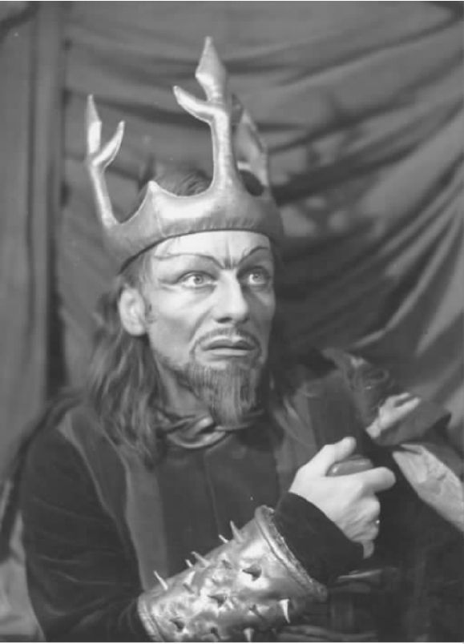
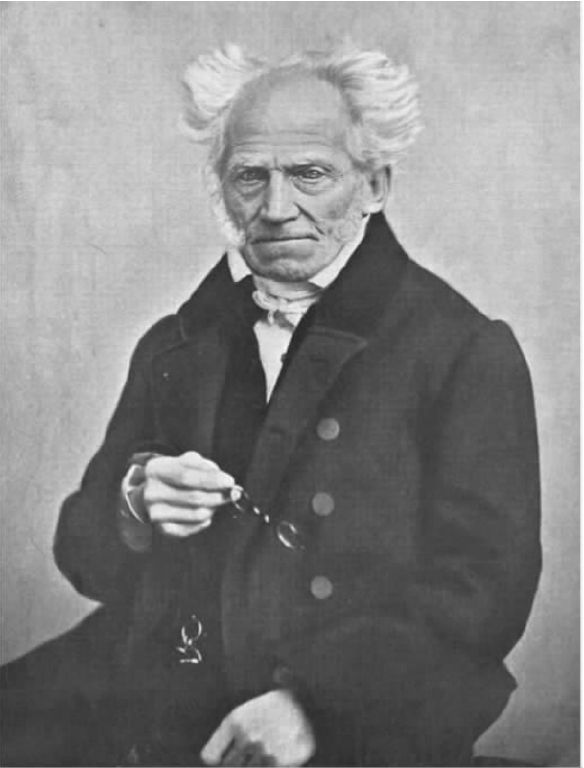

“什么是人生的意义？”这个问题是少数几个字字皆可质疑的问题之一。甚至第一个词就有问题，因为对于数以百万计的宗教信徒来说，人生的意义不是“什么”，而是“谁”。一个忠诚的纳粹分子很可能以他自己的方式同意，人生的意义在于一个人——阿道夫·希特勒。人生的意义也许只有在时间的尽头才能得到揭示，化身为弥赛亚，款款而至。或者，全宇宙不过是某个超级巨人的拇指指甲中的一个原子。
不过，真正具有争议的是“意义”这个词。如今我们倾向于认为，一个词的意义即它在日常生活中的某个具体用法；但“意义”这个词本身有许多种具体用法。以下列举其中的部分： [14]
这个词的这些用法大致可分为三类。一类是心里意图做某事，或心里想着某事；实际上，“意义”（meaning）这个词在词源上与“心灵”（mind）有关。另一类关乎“表示……的意思”。第三类将前面两类结合起来，表示“意图”这个动作，或者心里想以这个动作来表示某种意思。
“你真的想掐死他？”这句话显然是在问你的意图，或者当时你心里在想什么，“我指的是你，不是她”这句话也是同样的用法。说他们的相遇看来是“注定”的，是在说他们的相遇显得是出于一种神秘的意图，也许是命运的意图。“拉维尼娅心怀善意”表明她有善良的意图，虽然她的意图不一定会转化为实际行动。“考迪莉娅应该在星期天午饭之前把瓶塞钻还回来”表示我们觉得（或预计）她会这么做。“乌克兰人显然来真的了”是在陈述他们的目的或意图很坚决。“这幅画像注定是无价之宝”或多或少与“这幅画像被认为是无价之宝”是同义句，表示这是那些知情人“心里”的想法。这并不包含意图的观念。但其他大部分例句都含有“意图做某事”的意味。
与之相反，“那些云意味着要下雨了”和“薰衣草味的浴皂对他具有重大意义”并不是在说“意图”或心理状态。那些云并非“有意图表示”下雨，它们只是在表示而已。“薰衣草味的浴皂”不会有心理活动，说它对某人意义重大，只是在说这块肥皂表示许多内容。“这桩不光彩的事有什么意义？”是同样的用法，是在问这件事表示了什么。请注意，不是其中涉及的人物想要表示什么，而是该情形本身的含义。“他发火不表示什么”意思是他的怒火不表示任何内容，但不一定是指他主观上不想表示。这句话的意思与他的主观意图无关。如我们所见，第三类用法不是单纯的意图，也不是单纯的表示意思，而是有意图表示某种意思。这包括“她说‘被跳蚤咬过的老驴子’，指的是什么？”或者“他果真指的是‘鱼’？”这样的问题。
区分作为给定含义的“意义”，和作为意图表示某种意思的动作的“意义”，这非常重要。这两种意义的用法在“我想（表示意图）要鱼，但脱口而出的词却表示毒药”这句话中可以同时找到。“你想说什么意思？”意指“你心里的想法想表示什么？”而“这个词是什么意思？”问的则是该词在某个给定的语言系统内的表意价值。研究语言学的学者有时把这两种不同的“意义”含义区分为作为动作 的意义和作为结构 的意义。就后一种而言，一个词的意义是语言结构的一种功能——“鱼”这个词通过它在语言系统中占据的位置、它在系统中与其他词的关系等等而获得意义。那么，如果说人生有意义，也许这个意义是我们自己主动赋予的，就好比我们在一页纸上画一组黑色记号，表示某种意思；或者，这个意义与我们自己的活动无关，而是类似于作为结构或功能的意义。
不过，我们再把思路往前推，这两种“意义”不无关联。实际上，你可以想象两者是鸡生蛋、蛋生鸡一般的关系。“鱼”（fish）这个词表示某种有鳞片的水中生物，但之所以如此，是因为无数讲英语的人就是如此使用这个词的。这个词本身可被视为一系列历史活动所贮藏或积淀下来的成果。但相反，我只能用“鱼”这个词来指称有鳞片的水中生物，因为这个词在我的语言结构中表示的就是这个意思。
词语不是僵死的空壳，等着活生生的说话人倾注意义进去。我能意指（在意图说这个意义上）的东西受限于我所操语言中既有的意义。我不能“意指”一串完全无意义的词，尽管稍后我们将会看到，我仍然能用它来表示某种意思。我也不能意图说某种完全超乎我所操语言之外的内容，就像一个人如果事先没有脑外科医生的概念，就根本不可能意图成为一名脑外科医生。我不能随心所欲地让一个词意指某义。就算我说出“世界卫生组织”这个词时心里想的是一条熏鱼的生动画面，我说出口的意思仍然是“世界卫生组织”。
如果我们把意义当做词语在某种语言系统中的功能，那么，任何掌握了这个系统的人都可以说理解了词语的意义。如果有人问我，我怎么知道“永劫之路”（the path to perdition）的意义，回一句“我说英语”大概就够了。但是，这并不表示我理解这个词组的特定用法。因为这个词组能够在不同的场合指称不同的事物；要明白“意指”这个词在这 个意义上是什么意思，我得考虑特定说话人在特定语境下意图表达的意思。简单来讲，我需要弄清这个词组的实际应用；只知道个别词语在词典里的意思是不够的。一个词在特定场合下的指称对象或者选择对象，并不总是那么容易分辨。澳大利亚土著语中有个表示“酒”的词是“弯腰”，因为土著居民第一次学会这个词是在殖民者们碰杯高呼“国王”的场合。 [16]
我们可以谈及某人时说：“他说的一个个字 我都理解；但连起来我就不理解 了。”我熟悉他用的那些词的含义，但我搞不懂他对这些词的用法——他想指称什么，他暗含的态度是什么，他希望我明白什么，他为什么要我明白，诸如此类。为了搞清楚所有这些疑问，我得把他说的词放回到具体语境；或者换句话说，我得把这些词当做某种叙事话语的组成部分来把握。就这一点来说，光熟悉每个词的词典意义用处不大。在后一种情况下，我们讨论的是作为一种动作的意思——作为人们所做的事情、作为社会实践，作为人们在特定生活形式中运用特定符号的各种方式，这些方式有时意义不明并且互相矛盾。
那么，“意义”这个词的这些不同意思，对回答“人生的意义是什么？”这个问题有什么帮助呢？首先，“人生的意义是什么？”显然与“‘炫财冬宴’这个词的意义是什么？”不同。 [17] 前者问的是某一现象的意义，后者问的是某个词的意义。让人困惑的不是“人生”这个词，而是人生本身。另一方面，我们可以注意到，当有人哀叹“我的人生毫无意义”的时候，他们不是指人生就像一串诸如*&$?%的乱码一样毫无意义。相反，它更像是“随时随地，诚意相伴，我们永远是您卑微而忠诚的仆人……”这种客套话一般地无意义。发觉人生无意义的人，并不是在抱怨他们不知道自己身体的构造，或者抱怨自己是陷入了黑洞或是坠入了海洋。怀有那种无意义感的人不只是意志消沉，而且还有精神病。他们所要表达的是，自己的生活缺乏深意（significance）。所谓缺乏深意，就是说缺乏核心、实质、目的、质量、价值和方向。这些人不是在说他们不能理解人生，而是他们没有什么东西值得为之生活。不是说他们的存在不可理解，而是空洞无物。但是，要意识到他们的生活空洞无物，需要大量的阐释，因而需要大量的意义活动。“我的人生毫无意义”是一句存在主义的陈述，而非逻辑陈述。一个感到人生无意义的人大概不会去找本字典来查意义，他更可能会去找自杀药丸。
莎士比亚笔下的麦克白不必实施自杀，因为他的敌人麦克德夫已经一剑送他上了西天；但是这位苏格兰篡位者最终也陷入了绝望的心境：
第五幕，第五场
这段话要比看上去更令人困惑。麦克白其实是在抱怨人生的两大方面——短暂易逝和空虚无聊，并且我们能够领会两者之间的联系。任何功名成就都因为如此短暂而变得虚空。然而事物的短暂性并不一定意味着悲剧：我们也可以把它看做事物存在的自然之道，不带有必然的感伤意味。假如美味佳肴终将消失，那么暴君和牙痛也将一同逝去。一次为所欲为、通向无限的人生会有意义吗？在此意义上，难道死亡不正是人生具有意义的先决条件吗？或者，这样的人生除了“拥有意味深长的存在方式”这一点，还会有别样的意义？不管怎样，如果人生的确如此短暂易逝，为什么这个念头会让你想把人生变得更短？（“熄灭了吧，熄灭了吧。短促的烛光！”）

图6 惊恐的麦克白，由约翰·吉尔古德饰演
麦克白的这段话意思是，人的存在就像一次戏剧表演，持续时间不会很长。但是，这一比喻的思路并不严密，因为，戏剧本来就不应该演太长时间。我们不想永远坐在剧院里。那我们为什么不能以同样的态度接受人生的短暂呢？甚至，人生的短暂应该更容易接受，因为人类生命的短促是自然规律，而话剧不是？另外，演员退场不等于她在台上的表演完全作废。恰恰相反，她的离场是整个话剧意义的一部分。她不是想走就走的。在这个意义上，剧场比喻与以下观念相反，即死亡会削弱和取消人的奋斗成就。
莎士比亚在想唤起一种消沉的人生观时，用的是拙劣的演员来比喻，这并非偶然。毕竟，这样的演员是最容易败坏自己的名声和钱包的人。人生就像一位拙劣的演员（“拙劣”兴许同时表示“无能”和“可怜”），无意义是因为做作、不真实、充满夸夸其谈。演员的台词不是她自己“表达”的意思，人生亦然。但，这个比较不也是谬误吗？这不也是把意义当做“意图要说”的内容？而我们已经看到，这种观念用于人生是不可靠的。
那么，“一个愚人所讲的故事”这个比喻呢？在某种意义上，这个比喻让人感到慰藉。人生也许很虚幻，但至少它组成了一个故事，故事必然带有基本的结构。这个故事也许讲得乱糟糟，但背后总有一个叙事者，不论他或她多么愚蠢。若干年前，英国BBC电视台拍过一版《麦克白》，麦克白的扮演者朗诵这段剧终台词时的语气不是断断续续的喃喃自语，而是充满憎恨的大声咆哮，对着头上方的镜头放声大吼，而这个镜头的位置代表的自然是上帝。上帝正是那位愚蠢的叙事者。按我们即将分析的叔本华的世界观，这出可怕的闹剧背后的确有一位作者，但是，有作者不等于整个故事符合情理。恰恰相反，这只是为闹剧的荒诞意味又添了一份讽刺。不过，这儿还有一个含混之处：整个故事是本来就很荒谬，还是因为叙述者是一个白痴而变得荒谬？又或两者皆有？这个比喻也许主观上无意表明，客观上却表明，人生是有可能 有意义的，就像“故事”这个词可能提示的那样。怎么会有几段话字面上不表示任何意思，但仍然算一个故事呢？
人生就像一篇华丽的演讲，看上去很有意义，实则了无趣味。人生又像一位演技拙劣的演员，看上去要表达些什么，但能力不够。能指符号的泛滥（“充满喧哗和骚动”）掩盖了所指的缺失（“却没有一点意义”）。人生就像一段低劣的修辞，华丽地用空虚来填补空虚。人生充满欺诈，又毫无内涵。所以，当冒牌国王的政治野心最终化为嘴角的一缕灰尘时，真正的问题在于苦涩的幻灭感。不过，这个比喻也具有部分欺骗性。毕竟，演员就像任何人一样是真实存在的。他们的确在真诚地创造虚构故事，他们的舞台真实存在。［这个比喻也许在不由自主地暗示，这个世界（或舞台）就像演员一样不真实，而你总是可以断言人生不过是一场骗局，但布局的物质条件实实在在地存在。］“销声匿迹”的演员们只是退到了屏风后面，而不是进了坟墓。
《麦克白》的这段台词至少体现了两种关于“无意义”的概念。其中一个概念是存在主义的：人的存在是一片虚无，或一场空洞的闹剧。确实有很多意义存在着，但都是糊弄人的。另一个概念是所谓语义学的，暗指人生没有意义，就像一段疯子的话没有意义。这是一个白痴讲述的故事，不表达任何意思。人生既无法理解，又毫无意义。但严格说来，这句话不能同时说。因为如果人的存在真的无法理解，你就不能对它进行任何道德评价，比如你不能断定它没有意义。这有点像我们不能因为自己无法翻译某个外语单词而说这个词没有意义。
倘若人生的意义问题不同于解读一段无意义的话，那么，这个问题也不同于“Nacht这个词在英文中是什么意思？” [18] 我们不是在做翻译，寻找一个系统里的某个词在另一个系统里的对应词。道格拉斯·亚当斯在《银河系漫游指南》中有一段著名描写：一台名叫“深思”的计算机被要求演算出全宇宙的终极答案，这台计算机花了七百五十万年来运算，终于得出答案：42。接着就需要制造另一台更大型的计算机，以弄清那问题究竟是什么意思。这不禁让人想起美国诗人格特鲁德·斯坦，据传她在临死前不断地问“答案是什么？”，最终沉吟的却是：“但问题是什么？”在虚无的边缘提出关于问题的问题，这似乎是现代人境况的贴切象征。
“深思”计算机给出的“42”，有趣之处不只是它的突降法——我们后面还将继续讨论这个概念。还有一个荒谬的地方在于，“42”居然能够充当这个问题的答案，这就好像别人问你“太阳有可能在什么时候寿终正寝？”你回答“两盒原味薯片，一只酱蛋”。我们在讨论的是哲学家所说的范畴谬误，这就是它显得有趣的原因之一；类似的问题比如：投入多少感情才能让一辆卡车停驶？让人感到有趣的另一个原因是，面对这样一个许多人渴望回答的问题，它给出了一个简洁明了的答案，但我们对这个答案完全无从着手。“42”根本没法运用。我们无法凭借这个答案继续阐发。听上去这像个精确的、权威的解决方案，但实际上和回答“球花甘蓝”差不多。
这个答案的另一个滑稽特征是，它把“人生的意义是什么”这个问题当成与“Nacht这个词的意思是什么”同属一类。正如德文单词“Nacht”和英文单词“night”之间存在等义关系，亚当斯的喜剧故事认为，人生也可以转化为另一种符号系统（这次是转化为数字系统，而非文字系统），结果呢，你可以用一个数字来表示人生的意义。或者，仿佛人生就是一个谜语、一道难题、一篇密码电文，可以像填字游戏那样被破译，找出巧妙答案。在这个玩笑背后，是一种把人生问题当成可以求解的数学问题的思维方式。“问题”这个词的双重含义也引发了滑稽效果：一个填字游戏或一道数学难题是问题，人的存在这种成问题的现象也算是问题。仿佛人生可以解码，会有那么一个“我解出来了！”的时刻，一个关键词——权力、吉尼斯、爱情、性、巧克力——灵光乍现，我们的意识便豁然开朗。
“人生的意义”这个词组里的“意义”一词，是否可能拥有类似于“某人意图表明什么”这个范畴的意思？当然不可能，除非（比如）你相信人生是上帝的言辞，即上帝借以向我们传达重要内容的一个符号或一段话语。伟大的爱尔兰哲学家贝克莱主教就是这么想的。在此情形下，人生的意义指的是意义的一个动 作 ，即上帝（或生命力量，或时代精神 [19] ）意图通过它来传达的任何内容。但是，如果有人完全不相信这些令人敬畏的实体呢？是否意味着人生注定毫无意义？
不一定。例如，马克思主义者通常也是无神论者，但他们相信人类生活——或者用他们更喜欢的词，“历史”——有其意义，能够展现出某种意味深长的模式。那些鼓吹所谓的辉格党历史理论，即把人类叙事当做自由和启蒙理性的持续展开的人，也认为人类生活形成了某种意味深长的模式，虽然这种模式不是什么至高存在放进去的私货。确实，这些宏大叙事现在已经过时；但它们至少指出了一点，即相信人生有意义并且不需要声称这意义是某个主体所赋予的，这是可能的。在意味深长的模式这个意义上，意义的确不等于意图说某事这个动作，或者红灯表示“停驶”这个意思。然而，这也的确是我们偶尔会用“意义”一词表达的意思之一。倘若人类生活中没有意味深长的模式，即使没有单独的个人想这样，结果也会造成社会学、人类学等人文学科全盘停摆。一位人口学家可以评价说，某一地区的人口分布“有其意义”，即便住在该地区的居民对这种人口分布的模式事实上一无所知。
这样就有可能让人相信：存在着某种意味深长的叙事深植于现实中，即便它不具有任何超人的源头。例如，小说家乔治·艾略特没有宗教信仰；但是拿《米德尔玛契》这部小说来说，和许多现实主义文学作品一样，它预设了历史本身含有一个有意义的设计。经典现实主义作家的任务与其说是要虚构一个寓言，不如说是要把内含于现实中的隐藏的故事逻辑表现出来。与之相反，现代主义作家，比如乔伊斯，他觉得模式不是从宇宙中挖掘出来，而是被投射到宇宙之中的。乔伊斯的小说《尤利西斯》，从书名所指的希腊神话就可以看得出来，全篇都经过精心营造；但部分荒唐之处在于，随便什么神话也许都可以起到同样作用，赋予这个偶然的、杂乱的世界某种秩序的假象。
在把“有意义”视为“揭示了某种意味深长的设计”这种宽泛理解中，我们可以不预设意义背后有个作者，便谈论某物的意义；讨论人生的意义的时候，这一点值得留意。宇宙可能没经过有意设计，它几乎肯定也不是想表达些什么，但也不是全然杂乱无章。相反，它的深层规律显示出某种美感、对称和简洁，能令科学家们感动落泪。认为这个世界要么是由上帝给定意义，要么完全混乱而荒谬，这是一种错误的二元对立思维。即使那些碰巧把上帝当做人生终极意义的人，也不必非要认为，没了这块神性的基石，就将没有任何连贯的意义。
宗教原教旨主义有一种神经质似的焦虑，觉得如果没有一种所有意义背后的终极意义，意义就根本无以立足。这不过是一种轻率的虚无主义。这种想法的实质是，总觉得人生像纸牌搭建的房子一样：轻轻弹开底部那一张牌，整个脆弱的结构便会散落。这么想事情的人不过是一种象征说法的囚徒。实际上，许多宗教信徒都排斥这种观点。没有一位有理智、明是非的信徒会认为，非信徒注定要陷入绝对的荒谬之中。他们也不会必然认为，由于有了一个上帝，人生的意义问题就变得一清二楚。恰恰相反，一些怀有宗教信仰的人认为，上帝的存在使得这个世界更加神秘莫测，而不是变得明朗易解。即使上帝的确有一个明确的旨意，那也是我们猜不透的。在这个意义上，上帝不是解开问题的答案。他容易让事情复杂化，而不是让一切变得不言自明。
在同时思考自然有机体和艺术作品时，哲学家伊曼努尔·康德在《判断力批判》中认为，两者展现了“无目的的目的性”。人体没有目的；但我可以说，各个器官依据它们在整个身体系统中的位置而具有特定“意义”。并且这些意义不是由我们自身决定的。人的双脚不是由谁设计的，我们也不能说，脚的“目的”是帮助我们踢、走、跑。但是，脚在人体这个有机体中具有特定功能，所以，一个不懂人体解剖学的人问脚有什么意义是合情合理的。“意义”的其中一个意思是某个系统内特定词语的特定功能，同样，我们可以稍微延伸一下语言系统的范围，声称脚在作为整体的身体中是有意义的。脚不只是腿的尽头一只随意的垂片或铰链。
再举个例子：听到狂风神秘地吹过树木时，你问“那响声是什么意思？”并不会显得太奇怪。无疑，狂风不是想表达什么含义；但它的声响还是“表示”了一些信息。我们如果要满足提问者的好奇心或安抚其紧张心理，可以讲述一点儿关于气压、声学等的故事。同样，这不是我们自己能决定的意义。我们甚至可以说，一些随意摆放的卵石，也能表达出某种意义——这些卵石不经意间拼出了（例如）“一切权力归属苏维埃”，即便没有人怀着这个目的摆放它们。 [20]
有些事物的出现纯属意外，比如生命看起来就是如此，但仍然可以展现出某种构思。“意外”不等于“不可理解”。交通意外并非不可理解。它们并非完全毫无来由的反常事件，而是一系列具体原因所导致的后果。只不过这个后果并非当事人有意为之罢了。某些过程可能当时看上去是意外，但事后看来，可以由某种有意义的模式来解释。这或多或少是黑格尔的世界历史观。我们经历的时候可能觉得毫无意义，但对于黑格尔而言，比方说，当时代精神越过自己的肩头回望，对自己所创造的一切投去赞赏的一瞥时，一切都具有了意义。在黑格尔眼中，甚至历史的愚蠢错误和盲目小道最终都是这宏大构思的一部分。与之相反的另一种观点，体现在一个老玩笑中：“我的人生充满光彩夺目的角色，但我不知道该怎么安排情节。”从一个时刻到另一个时刻看起来都有意义，但全部归在一起则出了毛病。
还有什么方式来看待非意图的意义呢？一位艺术家可能在画布上绘出“猪”这个词，但不传达“猪”的意思——不是想“表达”猪这个概念，可能只是觉得“猪”这个词的造型很迷人。然而，字型还是会表达出“猪”的意思。与之相反的例子是，一位作家在他的作品中加入大量胡言乱语。如果这有一个艺术目的，我们可以说这些词语传达出了意义，虽然字面上无意义。例如，达达主义可以借这段胡言乱语批评那些认为词义固定不变的古板之见。作者这么做是“意图”表达些什么的，即便他“想说”的话只能用他语言系统里无意义的词语来表达。
我们谈论莎士比亚戏剧中复杂的意义网络时，并不总是认为莎士比亚在写下那些台词的时候脑子里一直装着那些意义。任何一位想象力如此丰富的诗人，怎么可能时时想着笔下所有词语的全部意涵呢？说“这是这部作品可能的意义之一”，有时即是说这部作品可以从这个角度来合理地解读。而实际上作者当时究竟“在想什么”，恐怕永远无法得知，甚至他自己也想不起来了。许多作者都曾遇到过这样的情形：别人向他展示作品的多种意义，但其实作者本人创作时根本没有想到。还有，按照定义并非故意意图的“无意识意义”呢？“我真的是用笔在思考，”维特根斯坦说，“因为我的脑袋常常不知道我的手在写什么。” [21]
***
正如有人可能认为，有些东西——甚至“人生”——或许有一种意味深长的设计或方向，但不是任何人所意图的；你也可以认为人的存在毫无意义、混乱无序，但实际上这正是意图的结果。这可能是恶意的“命运”或“意志”的成果。大致说来，这正是德国哲学家阿图尔·叔本华的观点，这位哲学家的观点是如此消极，以至于他的作品无意间成为西方思想史上伟大的滑稽经典。（甚至他的名字也有点滑稽，“叔本华”是高贵、冗长的姓氏，“阿图尔”则相当市井。）在叔本华看来，全部现实（不单单是人生）都是他所谓的“意志”的短暂产物。意志是一种贪婪的、无法平息的力量，它有自己的意图性；但如果说它产生了世上的一切，那不过是它保持自我运转的手段罢了。意志通过再生产现实来再生产自我，虽然这一切绝无任何目的。因此，人生的确有一个本质或核心动力；但这个真相令人恐惧，而不是鼓舞人心，它将导致破坏、混乱和永久的痛苦。并非所有的宏大叙事都不切实际。
由于意志纯粹由自己决定，它的目的完全内在于自己，仿佛是对上帝的恶意模仿。这意味着，它不过是在利用我们人类和世界上的其他生命，来实现自己的神秘目的。我们也许自认为，我们的生命拥有价值和意义；但真相却是，我们的存在只是在无助地充当意志的工具，为其盲目而无意义的自我再生产服务。不过要实现这一点，意志必须让我们产生错觉，误以为人生真的有意义；它的做法是，在我们脑中培育一种自我欺骗的拙劣机制，即“意识”，我们由此而获得一种幻象，觉得自己的人生有目的、有价值。它让我们误以为，它的渴望即我们的渴望。在这个意义上，叔本华眼中的一切意识都是虚假意识。就像老话说的那样，语言是我们掩饰思想的工具，同样，意识也是蒙蔽我们，让我们无法看到自身存在之徒劳本质的工具。否则，一旦直面屠杀与贫瘠的全景（也即人类历史），我们肯定会自我了断。不过，甚至自杀行为也代表了意志的狡黠胜利：它是不朽的，相形之下，它的人肉玩偶则将一一死去。

图7 阿图尔·叔本华，他的表情与他的人生观一样严酷
如此说来，叔本华属于哲学家中的以下谱系：这些哲学家认为虚假意识远不是需要用理性之光驱散的迷雾，而是绝对内在于我们的存在中的。早期著作受到叔本华影响的尼采，也属于这类哲学家。“真理是丑陋的。”他在《权力意志》中写道，“我们拥有艺术，是为了防止被真理摧毁。” [22] 西格蒙德·弗洛伊德是另一位深受他那位悲观的德国同胞影响的人。弗洛伊德将叔本华称为“意志”的那个东西重新命名为“欲望”。对弗洛伊德来说，幻想、误解和对真实（the Real）的压抑都是自我的构成要素，而非附属部分。一旦失去这些补救性的遗忘，我们将无法度日。会不会事实是这样：人生确实有其意义，但这个意义我们还是不知道比较好？我们倾向于假设发现人生的意义是自然而然值得努力的事，但如果我们的这个想法是错的呢？如果真实是一只会把我们变成石头的怪兽呢？
毕竟，我们总是可以问，为什么有人想要 知道人生的意义。他们是否确信，这有助于他们活得更好？毕竟，许多人虽然看起来不知道这项奥秘，却也活得不错。又或者，他们一直都掌握着人生的奥秘，只是自己不知道。兴许，人生的意义就是我现在正在做的事，就像呼吸一样简单，我根本意识不到它。如果人生的意义之所以神秘，不是因为它被藏了起来，而是因为它离我们的眼球太近，以至于我们无法看清呢？也许，人生的意义不是某个需要追求的目标，或一块需要发掘的真理，而是生活本身表达出来的某种东西，或者寓于某种生活方式之中。毕竟，一段叙事的意义不只在于它的“目的/结局”，还在于叙事过程本身。
维特根斯坦对此有段恰当的表述。“如果有人觉得他解决了人生的问题，”他写道，“并且想要告诉自己一切现在都变得简单，那么，只要他想一想自己过去没发现这个‘答案’的时候，便会意识到自己错了；而那时候 也照样生活，现在发现的人生答案就过去的生活来看似乎是偶然的。” [23] 在这个看法的背后，是维特根斯坦的一种确信：如果有“人生的意义”这么一个东西，那它既不是一个秘密也不是一个“答案”——这两点我们后面会继续讨论。同时，我们可以再问一次：如果人生的意义是某种我们应该想方设法不去 发现的东西呢？
启蒙运动时期的思想家们则不会这么想问题，他们认为，应该勇敢地分清是非对错。然而，18和19世纪之交，“救赎的谎言”或者说“有益的虚构”这种观念，逐渐流行开来。或许，人类将被真理摧毁，倒在它无情的目光之下。兴许虚构和神话不只是需要清除的谬误，更是能让我们存活下去的有效幻象。生命也许不过是一次生物学上的意外事件，甚至不是受到盼望的意外；但它在我们体内培育了一种随机现象，即心灵，我们可以依靠心灵来抵御由于知晓自己的偶然性而产生的恐惧。
仿佛在为我们施行顺势疗法，大自然既给了我们毒药，也好心地给了解药，而毒药和解药是同一种东西——人的意识。我们可以转而去徒劳地猜测，大自然关心作为整体的人类却对个体生命如此冷漠的原因。或者，我们可以把思绪转向建构那些赋予生命的神话——宗教、人文关怀等——它们也许可以在这个不友善的宇宙间给我们一些地位和意义。这些神话从科学的角度来看也许是不正确的。但我们在科学真理上或许过于自负，以至于认为它是唯一真理。
就像总体上的人文学科一样，这些神话可以说含有自己的真理——不在于它们提出的命题多么雄辩，而在于它们所产生的实效。如果这些神话能让我们怀着价值感和目的感去行动，那么，它们就足够真实，值得继续。
我们如果去看20世纪马克思主义理论家路易·阿尔都塞的著作，就会发现，这种思维方式甚至渗入了马克思主义，带着其对意识形态所带来的虚假意义的坚决抵制。但如果意识形态是极其必要的呢？如果我们需要用意识形态来说服自己，让我们相信自己是能够自主行动的政治主体呢？马克思主义理论也许觉得，个体没有很大程度的联合性和自主性，甚至没有现实性；但每个个体自身必须相信他们有，如果他们想有效行动的话。在阿尔都塞看来，保卫这种补救性的幻象是社会主义意识形态的任务。对弗洛伊德而言，心理学意义上的“自我”亦是如此，自我不过是无意识所衍生出来的，而它却把自己当做世界的中心。自我觉得自己是一个完整的、独立的实体，而精神分析学知道这不过是幻象；但不管怎么说，是有益的幻象，我们根本离不开它。
看起来，我们无法谈论人生的意义了，也许还面对着人生与意义之间的选择。如果真理将摧毁人类的存在呢？如果它如年轻时的尼采所想，是一种毁灭性的酒神力量；如叔本华阴郁地沉思的，是一种贪婪的意志；或如弗洛伊德所设想，是一种吞噬一切、冷酷无情、超越于个人之上的欲望呢？对精神分析学家雅克·拉康而言，人的主体要么“意指”，要么“存在”，不可能两者兼具。一旦我们进入语言，进而步入人性，所谓的“主体的真理”，即存在本身，就被分割在没有尽头的局部意义的锁链之中。我们只能放弃存在以追求意义。
要到受尼采和叔本华双重影响的小说家约瑟夫·康拉德，这种思想倾向才第一次大规模地进入英文写作。作为一位哲学上十足的怀疑主义者，康拉德不相信我们的种种概念、价值和设想在这个如波纹一般无意义的世界里有任何根基。即便如此，还是有各种道德和政治上的紧迫理由要求我们假装 相信这些概念、价值和理念有坚实的基础。如果我们不这么做，一个人们不愿意看到的结果将是社会的无政府状态。甚至可以说，我们怀有信念这个事实比我们相信的具体内容更加重要。这种形式主义接着就进入到存在主义，对后者而言，介入的状态本身，而不是介入的实际内容，才是本真性存在的关键。
剧作家阿瑟·米勒笔下的角色是很好的例子。如《推销员之死》中的威利·洛曼或《桥上一瞥》中的艾迪·卡本，都介入他们自己的某重身份，并介入身边的世界，从客观的观点来看，这个世界是不真实的。比如威利，他相信人生的意义在于获得社会的尊敬和财富上的成功。然而，对这些自欺欺人的人物来说重要的，就像易卜生笔下的悲剧角色一样，是他们投入这种介入活动的强度。到最后，有意义的是他们执著于自己的扭曲形象时表现出的英雄般的毅力，虽然这种毅力将他们带向了错觉和死亡。有信仰地活着——也许是任何过时的信仰——即是要为自己的生命注入意义。这样看来，人生的意义就变成了你的生活方式问题，而非实际内容问题。
只有傻瓜才会想象人生值得一过，在叔本华看来这是自明的真理。对他而言，人生最恰当的象征是拥有铲状爪子的鼹鼠：
整个人类的进程明显是一个可怕的错误，早就应该叫停。只有那些顽固不化、自我欺骗的人面对尸横遍野的历史时才会不这么想。人类叙事就是这样一种毫无变化的不幸，只有那些被意志的狡黠俘虏的人才会觉得人类的诞生是值得的。
在叔本华眼中，这个自我感觉良好的物种身上有种荒谬的东西，其中每个人都相信自己具有至高价值，追逐一些会在瞬间化为乌有的启迪性目标。这无意义的喧哗与骚动并没有伟大的目标，只有“暂时的志得意满、由渴望限定的瞬间快感、大量而长期的痛苦、持续不断的挣扎、一切人对一切人的战争、互相逃避和追捕、压力、欲望、需求、焦虑、尖叫和怒号；这是永恒的景象，或者等到地球土崩瓦解再重新展开” [25] 。叔本华所能指出的是，“没有人对这整场悲喜剧存在的原因有丝毫的了解，因为它没有观众，演员也经历着无尽的烦忧，极少有享受，并且只有消极的享受” [26] 。这个世界不过是一次徒劳的欲求、一场荒诞的烂戏、一个巨大的交易市场或生命互相厮杀的达尔文主义斗兽场。
当然，总有他人的陪伴；但对叔本华来说，是纯粹的无聊驱使着我们去寻求陪伴。就意志而言，人类与水螅之间没有显著区别，两者都是完全单调的生命动力运转的工具。人内心的最底层搅动着一股力量——“意志”，它才是人的内在本质，但它就像搅动海浪的力量一样无情又无名。主观性是最不能被称为属于我们自己的东西。我们内心承担着一股由虚无带来的迟钝的重量，仿佛会随时苏醒过来在心里作怪；这是意志在我们内心的作为，它构成了我们自我的核心。一切都带着渴望：人类不过是带着他们父辈繁殖本能的行尸走肉，这些徒劳的欲望都建立在匮乏的基础之上。“所有的意志行为，”叔本华写道，“都来自匮乏、缺陷，因而都来自痛苦。” [27] 欲望是永恒的，而欲望的满足则是罕见而不连续的。只要自我持续存在，被我们称做“欲望”的致命传染病就不会消失。只有无我的审美沉思，以及一种佛教式的自我克制，才能治愈我们因匮乏而产生的散光病，重新看清这世界的本来面目。
无须多言，事情还有另一面。然而，如果叔本华仍然值得阅读，那不只是因为他比几乎任何哲学家都要更坦诚、更严酷地直面了人生的某种可能性，即人的存在在最卑劣、最可笑的层面上都毫无意义。还因为，他讲的大部分内容都是对的。总的来说，实际的人类历史更多地是以匮乏、苦难和剥削，而不是以文明和教化为主要内容。那些想当然地认为人生必定有意义，并且是令人振奋的意义的人，必须直面叔本华的阴郁挑战。他的著作让这些人不得不尽力避免自己的观点沦为安慰性的止痛剂。